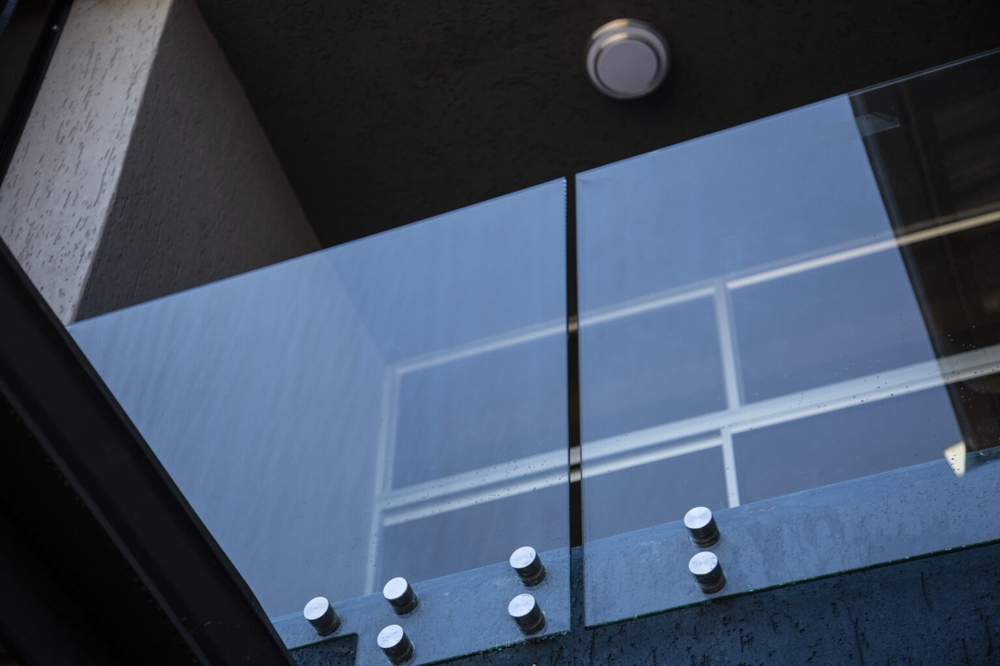

Balustrading – Flat & Curved
Toughened glass balustrading is manufactured through a controlled heat-treatment process that significantly
increases the strength of the glass compared to standard float glass. This makes it suitable for safety-critical
applications where impact resistance and durability are required.
Both flat and curved toughened glass balustrades provide a modern, unobtrusive barrier while maintaining openness and visibility.
- Ideal for staircases, balconies, mezzanines, landings, and pool enclosures.
- Available in flat or curved formats to suit architectural and design requirements.
- Provides high impact resistance and strength for everyday use.
- Breaks into small, blunt fragments if shattered, reducing the risk of serious injury.
- Can be supplied in clear, tinted, or frosted finishes depending on privacy and design needs.
- Custom sizing and edge finishing options available.
View our range of Toughened Glass thicknesses to match your specifications:
View Toughened Glass ThicknessesNorthern Hardware & Glass (Pty) Ltd.
If you would like to request a quote or more information, please contact us.
Contact Us